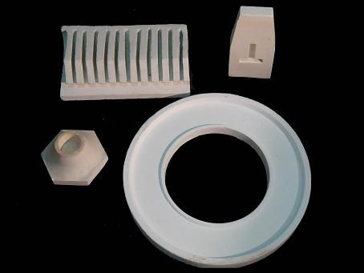
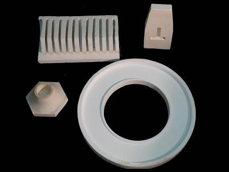

Piezas Especiales
Contando con la tecnología necesaria y un cuerpo técnico capacitado en Refractarios Naucalpan tenemos la capacidad de manufacturar cualquier tipo de pieza refractaria que nos solicite, en calidades de 40% hasta 95% de Alúmina.
Contando con la tecnología necesaria y un cuerpo técnico capacitado en Refractarios Naucalpan tenemos la capacidad de manufacturar cualquier tipo de pieza refractaria que nos solicite, en calidades de 40% hasta 95% de Alúmina.
